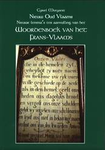
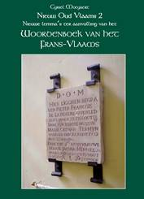

Hernieuwen
ledenbijdrage voor 2018
De
penningmeester dankt voor de vlotte wijze waarop gehoor
gegeven werd aan zijn verzoek tot vereffening van de bijdrage
voor 2018. De “nalatigen” tot nog toe wezen hierbij daaraan
herinnerd. Even ter herinnering: de bijdrage voor het al in
mei 2018 verschenen nieuwe Jaarboek De Nederlanden
‘extra muros’ en voor de driemaandelijkse Nieuwsbrief Zannekin
beloopt 29 €. Vanaf 35 € wordt u met dank als steunend lid
geboekt. Men kan daartoe enkel nog gebruik maken van
ons ‘Belgische’ zogenaamd ‘Europees’ rekeningnummer iban BE13 4648 2202 5139 – bic: KREDBEBB waarvan de
rekeningoverzichten ons dagelijks meegedeeld worden.
Hernieuwd
verzoek
Onze Zannekin-Nieuwsbrief
verschijnt slechts driemaandelijks. Mochten onze leden en
belangtellenden ons massaal hun e-postadres willen meedelen,
dan wordt het ons mogelijk hen ook tussentijds te bereiken
teneinde hen vlotter te informeren omtrent de op stapel
staande activiteiten en andere initiatieven die in het
verlengde daarvan liggen. Wil ons daarom uw e-adres meedelen
via een kort berichtje aan maurits.cailliau@skynet.be
met als boodschap: ’interesse in Zannekin’. Een honderdtal
leden deden dit al, waarvoor dank. Deze hernieuwde oproep is
dan ook gericht tot hen die dit tot nog toe nalieten te
doen.
GDPR: Mogen wij u blijvend op
de hoogte houden?
Op 25 mei trad de Europese
Algemene Verordening Gegevensbescher-ming (GDPR) in werking.
We maken gebruik van uw e-mailadres om u in te lichten over
onze activiteiten. Uw gegevens hebben we verzameld n.a.v.
een eerder contact. Met dit bericht willen we u erop wijzen
dat u op elk ogenblik het recht hebt om uw e-mailadres uit
onze mailinglijst te verwijderen via de link onderaan deze
e-mail. Uw gegevens worden niet met derden gedeeld en zijn
opgeslagen in een beveiligde omgeving. De volledige
ZANNEKIN-privacy-verklaring vindt u op www.zannekin.org
Onthulling Dathenus-gedenkplaat te Cassel op zaterdag 25 augutus 2018
 Foto
gedenkplaat: E. Stubbe
Foto
gedenkplaat: E. Stubbe
Petrus Dathenus en Nicasius Ellebodius zijn twee bekende Casselnaren, die het levenslicht zagen in Kassel/Cassel tijdens de woelige 16 eeuw
De “minister met den rosten baerd”
Pieter Datheen/Daethen raakte als gereformeerd predikant
bekend als auteur van de psalmberijmingen, die in bepaalde
protestantse kerken.in Nederland en Zuidelijk-Afrika nog
hoorbaar zijn. Vanuit de Zuidelijke Nederlanden zwierf hij
rond doorheen de Duitse gebieden tot hij rust vond in het
voormalig Pruisische Elbing/Elbląg, nu een Poolse stad.
Nicasius Elleboudt was priester en
heelmeester. Vanuit de Zuidelijke Nederlanden vertrok hij naar
Midden-Europa, waar hij opklom tot in de hoogste hiërarchie
van de Hongaarse katholieke kerk. Hij overleed te
Pressburg/Pozsony, nu het Slovaakse Bratislava.
De gedenkplaat aan de zijgevel van de
herberg “De Drie Meulens” in de Casselse rue Notre-Dame wordt
plechtig ingewijd op zaterdag
25 augustus 2018. Sprekers uit Nederland, Vlaanderen van
beide zijden van de Schreve en Zuid-Afrika zullen er het woord
voeren. Eerwaarde Heer Cyriel
Moeyaert zal de gedenkplaat inwijden. De plechtigheid
begint om 15.00 uur. U
bent van harte uitgenodigd daarbij aanwezig te zijn.
Voor alle bijkomende informatie kunt u
terecht bij Leo Camerlynck op het nummer 00 32 485 630 227 of
via e-post leo.camerlynck@skynet.be en
Karel Appelmans via e-post Karel.Appelmans@gmail.com
De gedenkplaat is een initiatief van de
vzw EUVO en de Stichting Zannekin.
Gedenkplaat Petrus Dathenus in het Frans-Vlaamse Cassel
In het
Noord-Franse stadje Cassel is een gedenkplaat aangebracht
ter nagedachtenis aan Petrus Datheen (1531-1588). De
rondzwervende gereformeerde theoloog, die grote bekendheid
verwierf door zijn psalmberijming, werd hier –
hoogstwaarschijnlijk – geboren. Cassel behoorde toen nog tot
de Zuidelijke Nederlanden.
De
gedenkplaat, in vier talen, is aangebracht op de buitenmuur
van café-restaurant ”In de drie Meulens” aan de Rue Notre Dame
in Cassel, vlakbij de Grote Markt. In deze straat, in de
schaduw van de Onze-Lieve-Vrouwekerk, zou Petrus Dathenus
geboren zijn. ”Al blijft dat gissen”, zegt Leo N. J.
Camerlynck desgevraagd. ”Veel bewijzen zijn er niet.”
Camerlynck,
woonachtig in het Belgische Ukkel, is voorzitter van de
Stichting Zannekin. Deze in 1934
opgerichte stichting zet zich in om ”de historische en de
culturele banden” van gebieden die ooit tot de Nederlanden
hebben behoord, weer aan te halen en waar nodig te
hernieuwen.” Het huidige Frans-Vlaanderen, tegen de Belgische
grens aan, is zo’n gebied. De gedenkplaat voor Datheen kwam
er, aldus Camerlynck, ”in goede samenwerking met de vereniging
Euvo, ‘Europa der
volkeren’, opgericht met als doel het Vlaamse karakter van de
Franse Westhoek te bewaren. Aan het roer daarvan staat Karel
Appelmans, uit Bray-Dunes, bij Duinkerken.”
Vijf
jaar geleden
Het idee voor
een gedenkplaat voor Datheen was afkomstig van de Groningse
staatsrechtgeleerde prof. mr. dr. Andries Postma, voormalig
Eerste Kamerlid voor het CDA. De website parlement.com omschrijft hem
onder meer als ”voorstander van hechte (culturele)
samenwerking met Vlaanderen.” Camerlynck: ”Postma kwam vijf
jaar geleden al met het idee. We hebben vervolgens geprobeerd
met het stadsbestuur van Cassel in contact te komen, maar
zonder enig resultaat. We hadden gehoopt de gedenkplaat op de
muur van het stadhuis te kunnen vastspijkeren, maar zelfs op
een aangetekend schrijven onzerzijds kregen we geen enkele
reactie. Uiteindelijk hebben we toen het heft maar in eigen
handen genomen. De eigenaar van ”In de drie Meulens” bleek
meteen bereidwillig om het bord op de muur van zijn pand te
laten aanbrengen. Daarmee sneed het mes dus aan twee kanten:
de gedenkplaat kreeg een zeer zichtbare plek én zijn
café-restaurant zou meer aandacht trekken.”
De plaat bevat
overigens twee namen: behalve die van ”gereformeerd predikant”
Petrus Dathenus ook die van zijn tijdgenoot Nicasius
Ellebodius. Deze ”kerkleider en heelmeester” werd in 1535 in
Cassel geboren. Officieel ”ingewijd” is de plaquette nog niet,
aldus Camerlynck. ”Dat gebeurt eind augustus. We willen dan,
naast Andries Postma, bijvoorbeeld ook iemand uit Zuid-Afrika
uitnodigen. In sommige kerkelijke gemeenten wordt daar nog
steeds uit de Psalmberijming van Datheen gezongen.”
Datheens
ouders brachten hem al op jonge leeftijd naar een klooster in
Ieper. Daar brak hij op 18- of 19-jarige leeftijd met de
Rooms-Katholieke Kerk. In de loop van zijn leven stichtte
Datheen op tal van plaatsen –waaronder Frankenthal –
calvinistische gemeenten. Op 17 maart 1588 overleed hij in het
Poolse Elbląg.
Toeristisch
Vermeldenswaard
is hier nog wel een artikel dat de Vlaamse
literatuurhistoricus drs. Karel Porteman begin jaren zeventig
van de vorige eeuw schreef in het tijdschrift Ons Erfdeel. De
latere hoogleraar klassieke Nederlandse letterkunde aan de
Katholieke Universiteit in Leuven zag ”weinig redenen voor een
Casselse gedenksteen” voor Pieter Datheen.” ”De ongeschreven
wetten waardoor, op de gepaste plaats en tijd, gevels, muren,
poorten en zitbanken, bij een min of meer aanzienlijke
volkstoeloop van ‘eeuwigdurende’ gedenkplaten worden voorzien,
getuigen – volgens de formule – van de ”diepe erkentelijkheid
der gemeenschap ten aanzien van haar groten”, begon Porteman
zijn bijdrage. ”Vaak echter is de belangstelling voor de
geografische afkomst van een beroemdheid overwegend van
nationalistische of toeristische aard. Zelfs al wilden de
huidige inwoners van het Frans-Vlaamse stadje Cassel Pieter
Datheen met een dergelijk gebaar als hun beroemdste zoon eren,
dan zouden zij bezwaarlijk hun ijver kunnen verantwoorden: de
banden die Datheen met Cassel en Frans-Vlaanderen binden zijn,
op het toeval na dat wij geboorteplaats noemen, om zo te
zeggen nihil. Het staat zelfs vast dat een groot deel van de
familie Daets of Daeten zich bij de hervormde gemeente die
Pieter te Frankentahl in de Paltz leidde, is gaan voegen,
zodat Cassel zelfs niet voor de ‘thuis’ of de ‘vaderstad’ van
de beroemde Calvinistische psalmberijmer kan doorgaan.”
Toch is er,
aldus Porteman, ”de roerende anekdote. In zijn droevige
levensavond, die hem naar de koele Noordduitse gewesten had
gevoerd, laat Datheen zich te midden van de Lutheranen
veiligheidshalve Petrus Montanus noemen, denkend aan het
Vlaamse stadje op de berg waar hij was geboren.” Cassel ligt
op de top van de Mont Cassel (Nederlands: Kasselberg).
Lees ook:
Berijming
Datheen: psalmen van 450 jaar oud (rd.nl, 09-03-2016)
Berijming
Datheen in 29 gemeenten gezongen (rd.nl, 04-03-2016)
Kerkgeschiedenis
in Flanders Fields (rd.nl, 04-09-2015)
Petrus Datheen
werd gezift als de tarwe (rd.nl, 12-03-2013)
Bron: Kerk &
religie in het Reformatorisch Dagblad
Deze zal
doorgaan op zaterdag 13 oktober 2018 te Ravestein
bij Nijme-gen. Alhoewel de aanleiding tot de ‘Vrede van
Nijmegen’ (1678) uiteraard al aan bod zal is gekomen tijdens
onze Studie-uitstap, zal op deze dag het bredere plaatje
geschetst worden die tot deze vrede aanleiding gaf. Op deze
dag dient men wel – als traditioneel voor onze
Ontmoetingsdagen – op eigen houtje heen. Over deze activiteit
uiteraard ruimere info in onze volgende Zannekin Nieuwsbrief.
Ten geleide bij het 40e Jaarboek De Nederlanden ‘extra muros’
Ook dit 40e Jaarboek De Nederlanden ‘extra
muros’ brengt weer een rijk palet aan bijdragen over de
randgebieden van onze Lage Landen die deel uitmaken van ons
geschiedkundig erfgoed. En als steeds openen we met de korte
bijdrage die zowat in een notendop het “programma” van Zannekin verwoordt.
Veertig opeenvolgende jaren telkens een
jaarboek uitbrengen is geen geringe opdracht gebleken. En in
elk daarvan was Marten
Heida vertegenwoordigt. In zijn Bij
de veertigste aflevering van ons Jaarboek – tevens zijn
afscheidsbijdrage – blikt hij terug op hoe deze onderneming
destijds van start ging en welke onvervangbare rol hij daarbij
gespeeld heeft.
 In vorig jaarboek werd aandacht besteed aan
het thema dat centraal stond op onze Ontmoetingsdag van 2016
te Belle: de Beeldenstorm. Daaromtrent had u nog de lezing van
Wido Bourel over Beeldenstormers
in de Zuidelijkste Nederlanden tegoed,
die we hierbij brengen.
In vorig jaarboek werd aandacht besteed aan
het thema dat centraal stond op onze Ontmoetingsdag van 2016
te Belle: de Beeldenstorm. Daaromtrent had u nog de lezing van
Wido Bourel over Beeldenstormers
in de Zuidelijkste Nederlanden tegoed,
die we hierbij brengen.
In ons vorig jaarboek speurde Ruud
Bruijns na hoe het Nederlands bewustzijn omtrent de verloren
gegane Nederlandse territoria zich weerspiegelde in de 17e en
18e eeuwse pers, waarbij ook de verslaggeving over de Slag aan
de Penebeek van 1677 aan de orde kwam. Dit was voor Kristof Papin
aanleiding om dieper in te gaan op de toenmalige
verslaggeving. Uit z’n onderzoek ‘Fake news’’ duikt op
in de verslaggeving over de laatste slag van Kassel
blijkt dat het als hedendaags beschouwde
verschijnsel dat ‘fake
news’ genoemd wordt in feite van alle tijden is en ook
toen al volop woedde.
Ook Cyriel Moeyaert –
vrijwel in al onze jaarboeken vertegenwoordigt – is ook nu
weer van de partij. Zijn bijdrage is dit keer gewijd aan Het
Nederlands in Zuid-Komen door de eeuwen heen.
Komen wordt in twee gedeeld door de Leie, waarbij de overkant
van de rivier Frans grondgebied is, terwijl het aan deze kant
van de Leie destijds tot het Vlaams gewest behoorde maar sinds
de vastlegging van de taalgrens in België overgeheveld werd
naar het Waals gewest. Het is goed eraan te herinneren dat het
in vroegere eeuwen Nederlandstalig was.
In deze jaarboekaflevering besteden we
nogal wat aandacht aan de persoonlijkheid van priester Jean-Marie Gantois,
wiens plotse overlijden we in mei van dit jaar voor we 50e
maal herdachten. Hij lag immers aan de basis van het
heropstarten van Zannekin.
Naast een korte situerende biografische nota brengen we de
integrale vertaling van zijn Geestelijk testament1, dat hij neerschreef
tijdens zijn internering na de Tweede Wereldoorlog. Niet
zonder recht beschouwde de Normandische regiona-list Jean
Mabire dit ‘Testament
spirituel’ als Gantois “Plus beau texte: c’est
une suite de réflexions sur la vie militante, où beaucoup
serait à citer – Ce texte, écrit en captivité, avant un
procès dont il ignorait totalement l’issue, prend en effet
l’allure d’un testament.”2
Met In het randgebied van de
Nederlanden. Een reportage in de Romaanse gouwen brengt
Maurits Cailliau
het afsluitende tweede deel van het merkwaardig documentair
verslag uit 1944, waarin toen vanuit Vlaams-nationalistische
hoek met een voor dat tijdsgewricht opzienbarend verfrissende
blik gekeken werd naar het Nederlandse verleden van onze
territoria beneden de Belgische taalgrens.
Ruud
Bruijns is met twee bijdragen present. In Gerbrand
Bruining, een Friese Patriot en Heel-Nederlander
herinnert hij aan een merkwaardige persoonlijkheid die
onverdiend in de vergetelheid belandde en met Het bewustzijn van de
Nederlanden omtrent de verloren gebieden tussen 1800 en 1829
speurt hij verder naar Heel-Nederlandse getuigenissen,
waarbij pertinente aandacht voor de aan Frankrijk en Pruisen
verloren gegane Zuidelijkste Nederlandse gebieden toen nog als
vanzelfsprekend ervaren werd.
Zeno
Kolks behoort al evenzeer tot onze trouwe en
gewaardeerde jaarboekmedewerkers. Dit keer besteedt hij
andermaal aandacht aan ons bouwkundig erfgoed en wel aan Vakwerk
in Oost-Nederland en West-Duitsland.
Leo
Camerlynck brengt ons met Eupen en het
Eupenerland als speelbal van de grootmachten
inzicht bij over het Nederlands verleden van een regio die ten
onrechte als te vaak al historisch Duits ingeschat wordt.
Met de Kroniek en een
handig register
over de jaarboeken 36-40 sluiten we traditioneel ons jaarboek
af.
Noten
1 In het allereerste Jaarboek De Franse
Nederlanden (1976) konden we de originele Franstalige
versie lezen, ingeleid door Eric Defoort.
2 Jean
Mabire, ‘Les éveilleurs de peuple, l’Abbé Jean-Marie Gantois’,
in Terre et Peuple,
nr. 15, 2003, pp. 40-43.
Tentoonstelling Tachtigjarige Oorlog
In 2018 is het 450 jaar geleden dat de
Tachtigjarige Oorlog begon. Iedereen heeft wel eens gehoord
van deze jarenlange opstand van de Nederlanden onder leiding
van Willem van Oranje tegen de Spaanse koning Filips II. Maar
wat is de betekenis van die oorlog, waarom is dit conflict
voor Nederland belangrijk? In de tentoonstelling 80 Jaar
Oorlog laat het Rijksmuseum met bijzondere kunstwerken
en spannende voorwerpen zien hoe geweld, opstand en
burgeroorlog, terreur en onderdrukking, religieuze
vervolgingen en vluchtelingen konden leiden tot het ontstaan
van het huidige Nederland en België, zonder dat dit ooit de
bedoeling was.
Televisieserie
NTR
In een 7-delige televisieserie brengt
de NTR in het najaar de verhalen over de 80-jarige oorlog die
overal in het land te vinden zijn. Hans Goedkoop overziet, met
deskundigen, het slagveld van de opstand van de Nederlandse
onderdanen tegen het wettige Spaanse gezag. Wat begint met
ontevredenheid van een minderheid groeit uit tot een oorlog
die meer dan een mensenleven zal gaan duren. Van Groningen tot
Brussel, van Den Briel tot Groenlo, overal barst de strijd
los. En vaak doet die strijd merkwaardig modern aan.
Terrorisme, propaganda, executies, radicalisering, shock and
awe; allemaal thema’s die moeiteloos terug zijn te vinden in
de oorlog die van 1568 tot 1648 werd gevoerd.
Website
80jaaroorlog.nl
Vanaf 23 april 2018 is op de website 80jaaroorlog.nl een
interactieve landkaart te zien die een overzicht geeft van
historische locaties, actuele tentoonstellingen en evenementen
in 2018. Zo kan íedereen op zoek naar ‘80 Jaar Oorlog’ bij hem
of haar in de buurt en verder weg. Wilt u meedoen met dit
initiatief? Laat het ons weten via: 80jaaroorlog@rijksmuseum.nl.
Bron: https://www.rijksmuseum.nl/nl/80-jaar-oorlog
Nog niet eerder gepubliceerde Franse-Vlaamse woorden
Een
aanvulling op Nieuw
Oud Vlaams 1 en 2
Cyriel Moeyaert
Afkortingen:
WDB: Woordenboek van het
Frans-Vlaams
Uitdr.: al dan niet vaste uitdrukking
OOV: Ons Oud Vlaams
NOW: Nieuw Oud-Vlaams
m v o: mannelijk, vrouwelijk, onzijdig
ww: werkwoord
vd: voltooid deelwoord
zn: zelfstandig naamwoord
bn: bijvoeglijk naamwoord
bw: bijwoord
 
Kaftjes van de eerder door Zannekin
gepubliceerde aanvullingen op Cyriel Moeyaerts ‘Woordenboek
van het Frans-Vlaams’